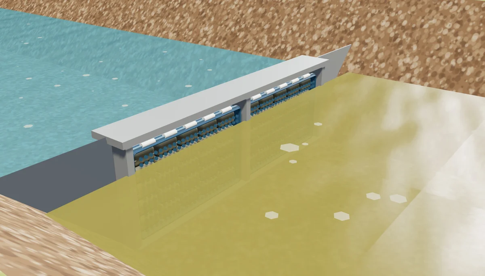
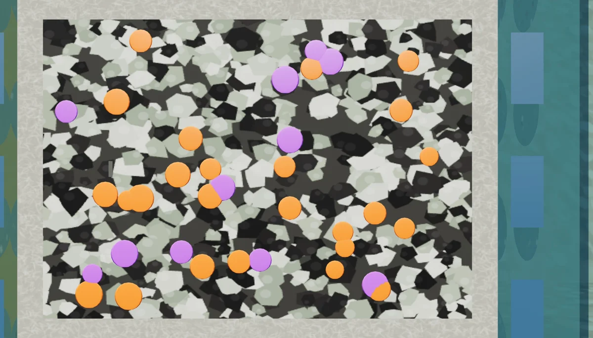
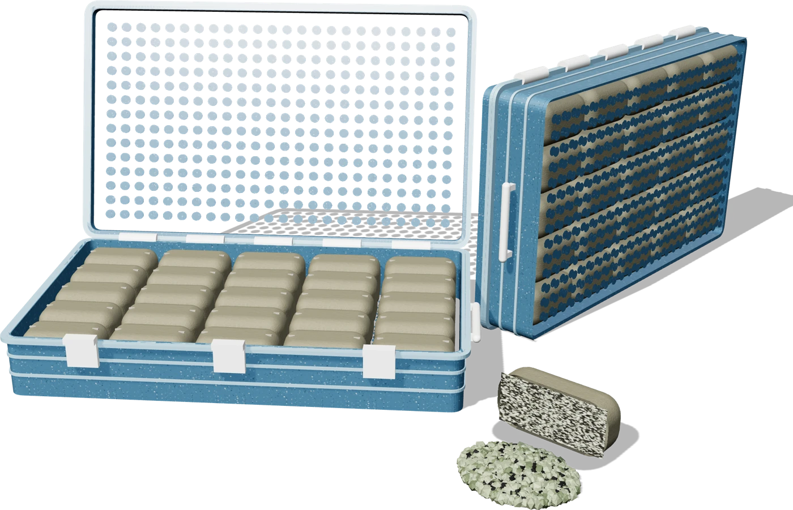
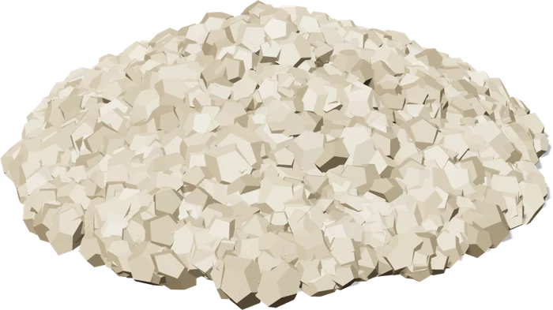
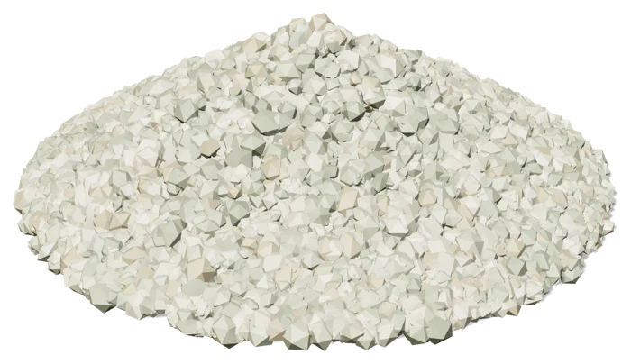
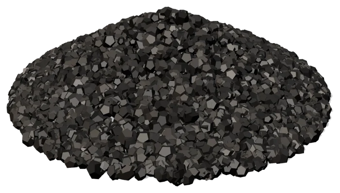
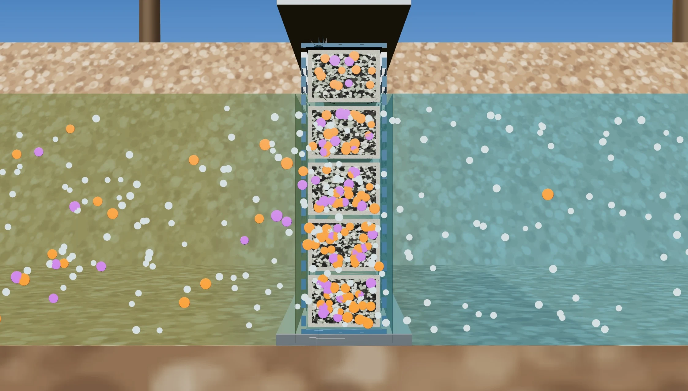
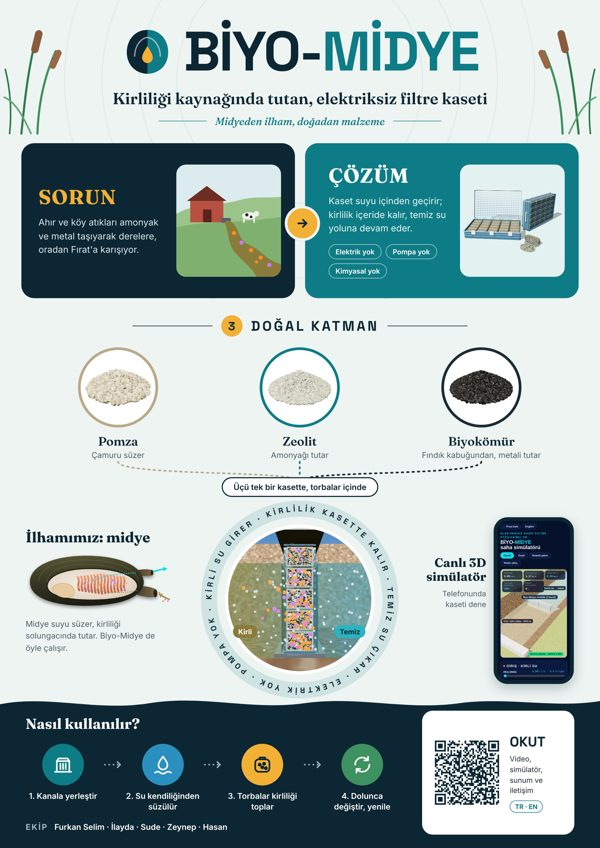
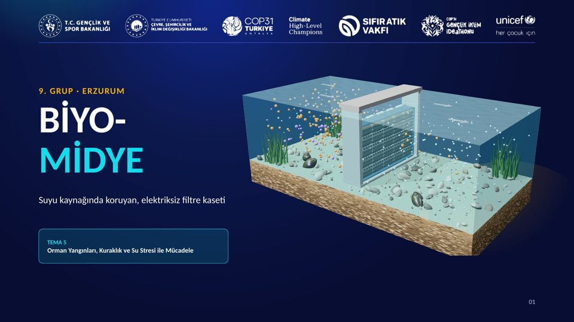

Elektriksiz pasif filtre
Kirliliği kaynağında tutan filtre kaseti
Ahır ve köy kanallarından gelen amonyak ve metaller dereye karışmadan kasette kalır. Midyeden ilham, doğadan malzeme.
- Elektrik yok
- Pompa yok
- Kimyasal yok
27 saniyelik saha animasyonu: kaset kanala nasıl kurulur ve suyu nasıl temizler.
Nasıl çalışır?
Üç adımda, elektriksiz.

1Kanala yerleşir
Ahır ve köy çıkışından dereye giden küçük kanala, akışa enine konur.

2Kirliliği yakalar
Su kasetin içinden geçer; amonyak ve metaller granüllerin yüzeyine tutunur.

3Dolunca değişir
Kaset midye gibi açılır, dolan torba çıkar, yenisi takılır.



Keşfet
Simülatörü dene, afişi ve sunumu indir.

Canlı 3D simülatör
Akışı ve kirliliği değiştir, kasetin ne kadar temizlediğini canlı izle.


Ekip ve iletişim
Bize doğrudan ulaşabilirsiniz.
Pilot ortağı arıyoruz
Serçeme suyuyla laboratuvar testi ve sahada pilot için üniversite, belediye ve kurumlarla çalışmak istiyoruz.